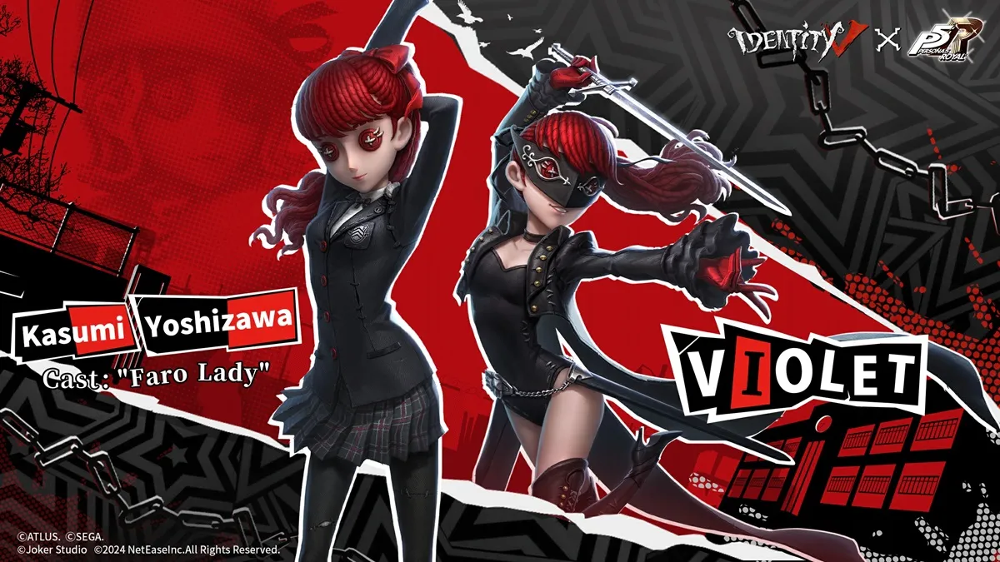
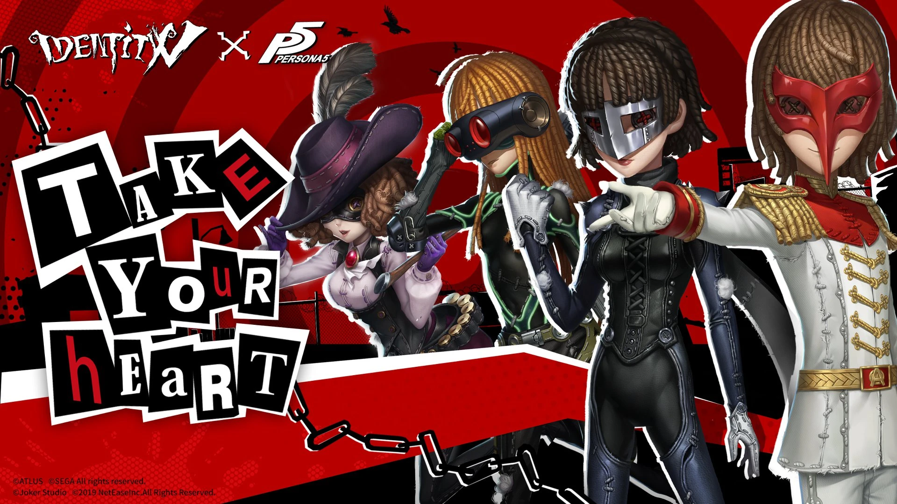
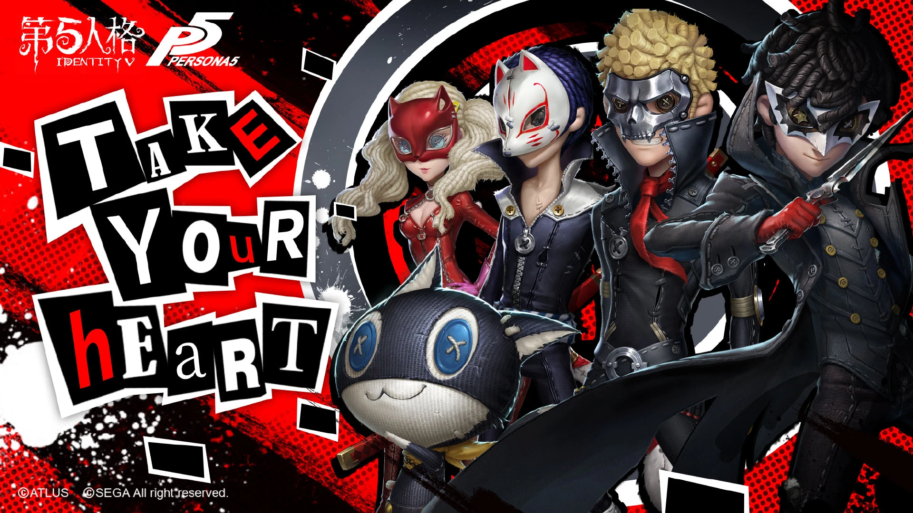

Vuelve el crossover de Persona 5 x Identity V.
El crossover más esperado por los jugadores que rompió el récord de jugadores registrados en tan solo minutos.
El crossover entre Persona 5 Royal y Identity V ha sido un evento destacado para los fanáticos de la saga, ofreciendo contenido exclusivo y oportunidades para interactuar con el universo de Persona 5 de una manera distinta. Esta colaboración comenzó en 2019 y ha continuado con varias fases, cada una trayendo nuevos trajes, objetos y eventos especiales. La fase actual, disponible hasta diciembre de 2024, es particularmente importante ya que permite a los jugadores obtener el traje A-type de Kasumi Yoshizawa, uno de los personajes más recientes de Persona 5 Royal. Este traje se utiliza para personalizar al personaje Faro Lady, una de las figuras del juego Identity V. Además, se ofrecen premios adicionales como emotes y retratos, que los jugadores pueden desbloquear participando en eventos especiales como Camino de la Verdad y Camino de los Investigadores, los cuales se centran en mecánicas relacionadas con la exploración y el misterio, características comunes tanto en Persona como en Identity V.
Lo interesante de esta colaboración es cómo mezcla elementos del mundo oscuro y psicológico de Persona 5 con la jugabilidad de Identity V, un juego móvil que se inspira en el género de supervivencia asimétrica. Este tipo de eventos no solo atrae a los fanáticos de Persona, sino también a aquellos que juegan a Identity V, ampliando su base de jugadores y creando una comunidad más integrada entre ambos títulos. Además de los trajes, la colaboración incluye misiones especiales que permiten ganar recursos y artículos exclusivos, lo que fomenta la participación activa en el evento.
Este tipo de crossover es parte de una tendencia creciente de la saga Persona de expandir su presencia en otros medios y juegos, algo que ha sido bien recibido tanto por los jugadores como por los desarrolladores. El hecho de que Persona 5 siga siendo una franquicia relevante fuera de sus títulos principales demuestra el compromiso de Atlus con la fidelización de su comunidad y su intención de seguir explorando nuevas formas de interactuar con su público.
